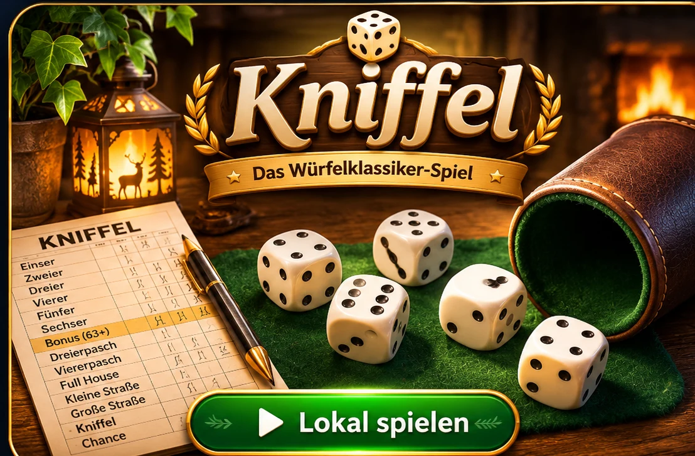

← Zur gemeinsamen Spielauswahl
🎲 Kniffel Online
Eigenständiges Hauptspiel · gemeinsamer Online-Raum
🌐 Raum & Spieler
–
Verbinde …
Spielerplätze (1–4)

Spiel vorbereiten
Warte auf die Rauminformationen.
← Zur gemeinsamen Spielauswahl
Eigenständiges Hauptspiel · gemeinsamer Online-Raum
Verbinde …

Warte auf die Rauminformationen.